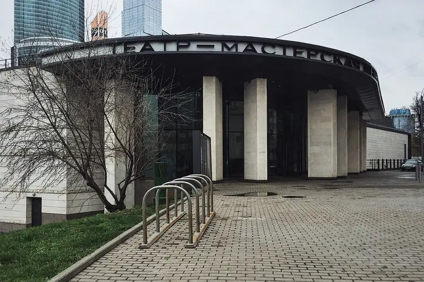

Подборку собрали 20 октября, прошедшие события скрыты. Свежая афиша — на главной

Фото: Gennady Grachev from Moscow, Russia, CC BY 2.0 · Wikimedia Commons
Театр · ЗАО
Мастерская Петра Фоменко
Театр Фоменко в здании на склоне над Москвой-рекой, напротив Сити. Тёплые, лёгкие по интонации спектакли — отличный выбор для свидания; билеты лучше брать заранее.
- ₽₽ · 1 500–3 000 ₽ на человека
- Новое в каталоге
- в 1 плане
- 2 события в афише
Позвать сюда: Мастерская Петра ФоменкоОткрыть в каталоге: Мастерская Петра ФоменкоМаршрут до места: Мастерская Петра Фоменко
Адрес и детали
- Адрес
- наб. Тараса Шевченко, 29
Открыть на Яндекс Картах (в новой вкладке) - Метро
- м. Москва-Сити
- Округ
- Запад (ЗАО)
- Цена
- 1 500–3 000 ₽ на человека
- Телефон
- +7 (499) 249-19-21
- Проверено
- работает — проверили в октябре 2026
Планы с этим местом 1
- Мастерская Петра Фоменко · Театр · м. Москва-Сити
- 12 минут пешкомSixty · Панорамный ресторан
Тёплый спектакль в Мастерской Фоменко на склоне над рекой, а потом по мосту «Багратион» в Сити — ужин на 62-м этаже «Федерации», когда башни уже светятся.
Открыть план: Фоменко и ужин над СитиПозвать сюда: Фоменко и ужин над Сити
Фото: Gennady Grachev from Moscow, Russia, CC BY 2.0 · Wikimedia Commons

Афиша площадки 2
Мастерская Петра Фоменко, Новая сцена · м. Москва-Сити
Премьера Ивана Поповски по Достоевскому: фантасмагория о Фоме Опискине, подмявшем под себя целое имение. Больше четырёх часов с антрактом.
Подробнее: Село Степанчиково и его обитателиПозвать сюда: Село Степанчиково и его обитателиБилеты : Село Степанчиково и его обитатели (страница с билетами, откроется в новой вкладке)
Фото: Gennady Grachev from Moscow, Russia, CC BY 2.0 · Wikimedia Commons
Мастерская Петра Фоменко, Новая сцена · м. Москва-Сити
Летняя премьера Евгения Каменьковича: пьеса Ростана как одно большое признание в любви. Три с половиной часа с антрактом на Новой сцене.
Подробнее: Сирано де БержеракПозвать сюда: Сирано де БержеракБилеты : Сирано де Бержерак (страница с билетами, откроется в новой вкладке)
Фото: Gennady Grachev from Moscow, Russia, CC BY 2.0 · Wikimedia Commons
Похожие рядом


Что ещё рядом


Как позвать
- Выбери план, место или событие — в карточке адрес, цены и маршрут в Яндекс Картах.
- Нажми «Позвать сюда» — соберётся приглашение-игра для свидания или голосование для компании.
- Отправь ссылку в любой мессенджер: тебе ответят, а компания отметит, куда и когда может. Бесплатно и без регистрации.